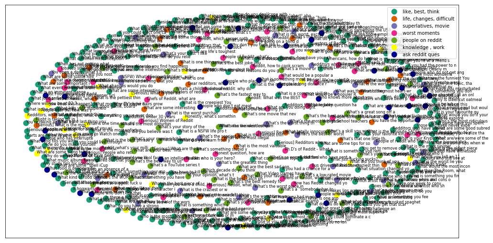

Reddit Questions Clustering
Introduction
I decided to play around some clustering and also wanted to learn using Reddit API.
Hence I came up with an idea to use a bag of words model to cluster the top questions on /r/AskReddit. Pull the data using the Reddit API.
Objective
In this blog, I will try to document the steps that I took to create my clustering of hot questions on Reddit. I would share with you how I approached this project.
Heading into the real work!
Data Extraction and Cleaning
I have used the python wrapper for Reddit API ie. PRAW package for extracting the data from Reddit.
The steps are from the Sentdex’s tutorial on PRAW.
Steps:
1. Importing the libraries
(a.) praw - wrapper for Reddit API
(b.) time - as Reddit API allows only 60 API requests per minute, hence to avoid overusage and effectively extract information in a batched manner
2. Creating the Reddit API instance
Create an app on Reddit and use the credentials for creating the Reddit API instance.
3. Extract the data
Extract the data using the subreddit method, and then extract the hot questions using the hot method.
Further the non-stickied questions are extracted and saved in a file
Step 1: Importing the libraries
# Importing the libraries
import praw
import time
Step 2: Creating the Reddit API instance
# Creating a Reddit API instance
reddit = praw.Reddit(client_id= 'client_id',
client_secret= 'secret_key',
username= 'user_name',
password= 'password',
user_agent= 'unique_name')
Step 3: Extracting the Data
# Pulling the data
# Pulling the hottest 500 questions
subreddit = reddit.subreddit('AskReddit')
top_askreddit = subreddit.hot(limit=500)
# Converting to list in order to avoid over usage of Reddit API
top_list = list(top_askreddit)
print('No of questions : {}'.format(len(top_list)))
No of questions : 500
cleaned_questions = []
_size = 30
for _index in range(0, len(top_list), 30):
for i in range(_size):
if i + _index < len(top_list):
if not top_list[i + _index].stickied:
cleaned_questions.append(top_list[i + _index].title)
print('Batch {} completed: '.format(_index))
time.sleep(60)
Batch 0 completed:
Batch 30 completed:
Batch 60 completed:
Batch 90 completed:
Batch 120 completed:
Batch 150 completed:
Batch 180 completed:
Batch 210 completed:
Batch 240 completed:
Batch 270 completed:
Batch 300 completed:
Batch 330 completed:
Batch 360 completed:
Batch 390 completed:
Batch 420 completed:
Batch 450 completed:
Batch 480 completed:
Note: This step will take time because we can send only 60 API requests in a minute.
So grab a cup of coffee! or have a nap ;)
print(cleaned_questions[:20])
['What are life’s toughest mini games?', 'What are some slang terms a 50 year old dad can say to his daughter to embarrass her?', 'Redditors who were in attendance at a wedding that was called off mid-ceremony, what was the story?', 'What are your best “first date tips” for somebody starting the dating game late in life (late 20’s +)?', 'Chefs of Reddit, what are the biggest ripoffs that your restaurants sell?', 'The year is 2050. How do you think you would complete the sentence: "Back in my day, we didn\'t have ..."?', 'What screams "I\'m emotionally unstable"?', 'What is an imminent danger that nobody seems to be talking about?', 'What is the worst purchase you ever made?', "What's the WORST name for a strip club you can imagine?", 'What skills can a poor 19 y/o learn to help make an income and get further in life?', 'What’s something that you only do because it’s socially standard?', 'What saying from a movie or television show do you find yourself using in everyday life, even though you wind up having to explain it afterwards?', 'What mildly illegal thing do you do?', 'What do you regret doing at university?', 'What song fills you with the most emotions (positive or negative) and why?', 'What game have you spent the most hours playing?', 'Which artist has the fakest public image?', 'Americans, how do high schools as portrayed in Hollywood teen movies compare to your high school in real life?', 'What is a common internet thing that you hate?']
reddit_ques = open('reddit_ques.txt', 'w')
for ques in cleaned_questions:
reddit_ques.write("%s\n"%ques)
Now the real task of clustering begins! :D
Step 4: Importing the libraries
(a.) pandas - for data analysis
(b.) nltk - for data preprocessing
(c.) re - for data cleaning
import pandas
import nltk
import re
Step 5 : Reading the data extracted from the Reddit API
# Read the data
data = [line.strip() for line in open('reddit_ques.txt', 'r')]
data[:10]
['What are life’s toughest mini games?',
'What are some slang terms a 50 year old dad can say to his daughter to embarrass her?',
'Redditors who were in attendance at a wedding that was called off mid-ceremony, what was the story?',
'What are your best “first date tips” for somebody starting the dating game late in life (late 20’s +)?',
'Chefs of Reddit, what are the biggest ripoffs that your restaurants sell?',
'The year is 2050. How do you think you would complete the sentence: "Back in my day, we didn\'t have ..."?',
'What screams "I\'m emotionally unstable"?',
'What is an imminent danger that nobody seems to be talking about?',
'What is the worst purchase you ever made?',
"What's the WORST name for a strip club you can imagine?"]
questions = data.copy()
Step 6: Data cleaning and Preprocessing
In this we will perform the following operations:
(1.) Removing the stop words.
(2.) Removing the punctuations.
(3.) Normalizing the words using WordNetLemmatizer in nltk
(4.) Removing numbers from the words
# Cleaning and preprocessing
from nltk.corpus import stopwords
from nltk.stem.wordnet import WordNetLemmatizer
import string
stop = set(stopwords.words('english'))
exclude = set(string.punctuation)
lemma = WordNetLemmatizer()
def clean(doc):
stop_free = " ".join([i for i in doc.lower().split() if i not in stop])
pun_free = ''.join(ch for ch in stop_free if ch not in exclude)
normalized = ' '.join(lemma.lemmatize(word) for word in pun_free.split())
removed_numbers = re.sub(r'\d+','',normalized)
return removed_numbers.split()
Step 7: Converting into word vectors
We will be using TF-IDF word vectors to obtain a bag of words model for our data.
Here, I define term frequency-inverse document frequency (tf-idf) vectorizer parameters and then convert the synopses list into a tf-idf matrix.
To get a Tf-idf matrix, first count word occurrences by document. This is transformed into a document-term matrix (dtm). This is also just called a term frequency matrix. An example of a dtm is here. 
Then apply the term frequency-inverse document frequency weighting: words that occur frequently within a document but not frequently within the corpus receive a higher weighting as these words are assumed to contain more meaning in relation to the document.
A couple things to note about the parameters I define below:
max_df: this is the maximum frequency within the documents a given feature can have to be used in the tfi-idf matrix. If the term is in greater than 80% of the documents it probably cares little meanining (in the context of film synopses) min_idf: this could be an integer (e.g. 5) and the term would have to be in at least 5 of the documents to be considered. Here I pass 0.2; the term must be in at least 20% of the document. I found that if I allowed a lower min_df I ended up basing clustering on names–for example “Michael” or “Tom” are names found in several of the movies and the synopses use these names frequently, but the names carry no real meaning. ngram_range: this just means I’ll look at unigrams, bigrams and trigrams. See n-grams
from sklearn.feature_extraction.text import TfidfVectorizer
tfidf_vectorizer = TfidfVectorizer(max_df=0.8, max_features=200000,analyzer='word',
min_df=0.001, stop_words='english',
use_idf=True, ngram_range=(1,3), tokenizer=clean)
tfidf_matrix = tfidf_vectorizer.fit_transform(questions)
print(tfidf_matrix.shape)
(457, 4432)
C:\Users\MAYANK\Anaconda3\lib\site-packages\sklearn\feature_extraction\text.py:1059: FutureWarning: Conversion of the second argument of issubdtype from `float` to `np.floating` is deprecated. In future, it will be treated as `np.float64 == np.dtype(float).type`.
if hasattr(X, 'dtype') and np.issubdtype(X.dtype, np.float):
terms = tfidf_vectorizer.get_feature_names()
Step 8: Applying KMeans Clustering Algorithm
Now onto the fun part. Using the tf-idf matrix, you can run a slew of clustering algorithms to better understand the hidden structure within the synopses. I first chose k-means. K-means initializes with a pre-determined number of clusters (I chose 7). Each observation is assigned to a cluster (cluster assignment) so as to minimize the within cluster sum of squares. Next, the mean of the clustered observations is calculated and used as the new cluster centroid. Then, observations are reassigned to clusters and centroids recalculated in an iterative process until the algorithm reaches convergence.
I found it took several runs for the algorithm to converge a global optimum as k-means is susceptible to reaching local optima.
# Defining the similarity metric
from sklearn.metrics.pairwise import cosine_similarity
dist = 1 - cosine_similarity(tfidf_matrix)
from sklearn.cluster import KMeans
num_clusters = 7
km = KMeans(n_clusters=num_clusters)
km.fit(tfidf_matrix)
clusters = km.labels_.tolist()
# Creating a pandas dataframe to store the results
import pandas as pd
questions_f = {'ques': data, 'cluster': clusters}
frame = pd.DataFrame(questions_f, index=[clusters], columns=['ques', 'cluster'])
# Observing the distribution of clusters.
print('Clusters and their counts: ')
frame['cluster'].value_counts()
Clusters and their counts:
0 231
4 57
3 42
6 36
1 35
2 32
5 24
Name: cluster, dtype: int64
Step 9 : Visualizing the results
Visualizing how questions are around the clusters and what are the important cluster words
print("Top terms per cluster:")
print()
order_centroids = km.cluster_centers_.argsort()[:, ::-1]
for i in range(num_clusters):
print("Cluster %d words:" % i, end='')
for ind in order_centroids[i, :6]:
print(' %s' % terms[ind],end=',')
print()
print()
print("Cluster %d questions:" % i, end='')
for title in frame.ix[i]['ques'].values.tolist():
print(' %s,' % title, end='')
print()
print()
Top terms per cluster:
Cluster 0 words: thing, what’s, best, like, redditors, think,
Cluster 0 questions: What are life’s toughest mini games?, What are some slang terms a 50 year old dad can say to his daughter to embarrass her?, Redditors who were in attendance at a wedding that was called off mid-ceremony, what was the story?, The year is 2050. How do you think you would complete the sentence: "Back in my day, we didn't have ..."?, What screams "I'm emotionally unstable"?, What is an imminent danger that nobody seems to be talking about?, What’s something that you only do because it’s socially standard?, What mildly illegal thing do you do?, What do you regret doing at university?, What song fills you with the most emotions (positive or negative) and why?, What game have you spent the most hours playing?, Which artist has the fakest public image?, What is a common internet thing that you hate?, What is something that was normal in your childhood, but now you realize was weird/not okay?, [Serious]Redditors with good dads: What solid dad wisdom would you share with the rest of us?, What would you tell an 11 year old girl that is currently experiencing problems with mean girls at school?, How does an absence of a father affect a child?, Apart from "Barenaked Ladies", what are some misleading band names out there?, What doesn't impress you?, You get to remove one letter from the name of a website. What is this website used for now?, What’s the most depressing meal you’ve eaten?, What smells good but would be disgusting if it was a taste?, What is the best opening line of a book?, What caused you to end a friendship?, Fellow Lefties! What are some sports/activites/etc. that you are predominantly righthanded?, What are good ways to combat laziness or feeling unmotivated?, When buying a used car, what are some red flags to look for?, What is the most unfortunate name you have ever heard?, What is the oldest piece of technology you own and still use in 2018?, What are you elitist about?, What is that thing nobody does anymore but you still do?, What are some subtle hints that someone may be a racist?, What excuse do you no longer accept?, Redditors that have been to a medium, what was your experience like?, Any study tips for someone who suffers from ADHD?, What would be on the "humans... FAQ" list if it was written by aliens who observed our history?, What’s a process, when done backwards, is hilarious?, What is the biggest dick move you’ve ever pulled?, If you had the power to name a AI that would destroy every frog in the world, what would you call it?, What advice can you offer a new home owner?, If hogwarts was real, on which house you should be? And why?, What seemed like a good idea at the time?, What are some skills that are going to be in great demand in the future?, Who was your first fictional tv character crush?, What was your favorite thing to do during recess as a kid?, How does this happen? I searched for someone I knew 10+ years ago on FB, then the next day she adds me to LinkedIn. Is it just a coincidence?, What is the best phrase you can say to cheer up someone?, What useful skill can you learn in under an hour?, What are some tips for having sex with your spouse when there are young and teenage children in the house?, What’s the last thing you ate leftovers of?, Redditors that have been stalked, how did it start and what happened? (Serious), If your SO suddenly woke up as the opposite gender what would you do?, I’m going to Watch one movie every day of 2018. What is your favorite movie, most hated movie, an under rated movie and guilty pleasure movie?, What movie has the most predictable plot twist?, What event made you finally decide that you were done with the relationship/job/family member/etc? And have you ever regretted the decision?, What is one episode that you would not like to see of 'How it's made' ?, Redditors who like math, what’s the most beautiful thing in math to you?, How are you doing?, What music album has a great vibe?, What would you do if your SO gained a lot of weight?, What’s the one topic, that if you get started talking about, you just won’t shut up!?, Who did you believe was the 'one that got away' until you later found out that you dodged a major bullet?, what would you attempt to do if you knew you could not fail ?, [serious] Those of you with anxiety, what self-care tips do you have when you don’t feel like taking care of yourself or are having a rough day?, What one piece of information given to the losing side of a battle/war would alter the course of history?, What is something you find truly fascinating?, Redditors, what advice would you give for a soon-to-be college student? [Serious], Your favorite "you suck" speech in a movie, show or game?, What are the best drinking game RULES?, What is the most heart-wrenching thing you have ever heard?, What do you want for your birthday?, What lesson did you learn the hard way?, What is a dish or snack you thought you invented, only to find out later you didn't?, What is the most useless superpower you can think of?, What movie or TV cliché drives you insane?, How have you witnessed any type of discrimination?, What is something you remember distinctly but apparantly never existed/didn't happen?, What totally innocuous thing made you cry?, If you could be a fly on anyone's wall for a day who would you choose and why?, Dear redditors, what is the laziest thing you've ever done?, What did your parents realize which made them stop hitting you?, What do you do when you can’t sleep?, What stereotype is 100% false?, How does a bad relationship with the father affect a child?, Sons with absent fathers, what is the advice you would have liked to receive?, What is something which seemed like a great idea at the time, but now you deeply regret?, What is a common skill that took you WAY too long to learn?, What have you had in your possession that you believed was incredibly valuable but turned out to be worthless?, What music artists have a great unique sound?, What completely inconsequential mistake you made as a child still haunts you to this day?, What kills your suspension of disbelief while watching a movie?, What is the most click-bait headline you can come up with?, Lottery winners, what is something not commonly known about when you win a major lottery?, What is the creepiest YouTube video you've ever seen?, What jobs or fields heavily utilize both science and mathematics knowledge/skills in addition to writing and critical thinking knowledge/skills?, For what reasons do you get mad at your SO?, What things will you nostalgically tell your grandkids about that they just won't get?, What type of "______ for Dummies" book would you buy?, You just woke up and realize your gender has switched to the other one during the night. What is the first thing you do?, You have the opportunity to go back in time and tell yourself one thing - What do you say and at what age?, If you could be anywhere in the world right now where would you be and why?, Redditors who've smoked marijuana/pot, or taken edibles, have you ever had a negative or less than ideal experience?, What are some shows/movies that were great overall but had a terrible ending?, What do you not regret doing at University?, Who's the most ridiculous candidate you can imagine running against Trump in 2020?, [Serious] Former meat eaters, how have you changed physically and mentally/emotionally since becoming Vegetarian/Vegan?, What's your funniest or most embarrassing story of having someone walk in on you having sex?, How do you make yourself happy?, Honestly, what's something that makes your day?, What is your Kryptonite?, What is the funniest thing you did while being drunk?, What movie is so boring that you put it on to fall asleep?, What is something that hasn't aged well?, What is your most inspiring quote?, Redditors, what are the attributes of any physician that make them stand out amongst others?, Fast Food workers of Reddit, what stories do you have which would make us never eat fast food?, If Black Mirror was a porn series instead of a psychological horror, how do you think the episodes would play out?, What animal would you like to be reincarnated as?, Farts are funny.What is your funny fart story?, Where will you be at 22:30?, For all those who have hobby fishing, what makes it fun?, Those who have never experienced snow first hand, what do you think it's like?, What is something you done while drunk that you later came to regret?, What is a good way to pass the time when the power is out?, What was a time when you suddenly realized YOU were the asshole?, What recent trend in movies are you sick of?, [Serious] Redditors that gave up on a drug addicted family member, friend or lover - what was the moment that finally made you walk away? Where are they now?, What’s the scariest encounter you’ve had with someone who was homeless?, Retail workers of Reddit, what is something a customer tried to return that you couldn't believe?, What is the craziest thing that happened in your high school?, What unrealistic scenario is in your head?, What song makes you want to punch someone in the face?, What are some employee benefits you'd like to see more companies adopt?, What do you have a strong opinion about but not many others care about?, When has not getting what you want turned out to be a blessing in disguise?, Why is being content in your job a BAD thing in American society? Why must everyone try to be a CEO?, What is the most valuable thing you've ever lost?, Which actor would play the least-convincing Nazi ever if cast in a WWII movie?, Flight is taking off in 10minutes, what are the best mobile games to kill time with?, What first world problem are you dealing with today?, What are some tips to prevent insanity?, What is your go to snack?, What are you afraid of?, What kind of food defines your country?, Is there a fictional character you have an unhealthy attraction to? Why?, What is something you feel more comfortable doing with your non-dominant hand?, What makes lips water-proof?, What are the best sad songs?, What is the smoothest pick up line that you have seen being executed?, What is the most inspirational quote?, What did you do today that you didn't do yesterday?, Girls who have leaked nudes of themselves how did it happen and how did you handle it?, Other than The Room, what are some other legendary "bad" films?, What is the most wonderful thing your mother has ever done for you?, What is an appropriate way to inform a driver that they shouldn't be TEXTING RIGHT IN FRONT OF ME F*%#?, What are some tips for someone starting school in their mid 20s?, What is currently a bubble in terms of money making and when do you see it popping?, What is the sweetest thing your significant other has done for you?, What is the most illegal thing you've ever done?, Adults who still live at home with your parents, how do you do it?, [Serious] What is the most corrupt thing to happen in your small town?, What is going to seriously change the world in the next 10 years?, What was your “a blessing in disguise” moment?, What recognizable companies do you trust the most?, Redditors under 30 years of age, how much time do you have left to make a '30 under 30' list, and what is your best chance of doing so?, What just fucking sucks?, Does the brain delete unwanted memories when we sleep?, What are some subreddits that are complete opposites of each other?, What do you say when your dog actually ate your homework?, What’s the greatest movie quote of all time?, Why do we say Person Of Colour but not Coloured Person?, [Serious] What are your strongest arguments for being pro-choice or pro-life?, What’s your favourite podcast and why?, What is one thing you love about yourself?, What inanimate object have you attacked in a rage?, What is your favorite kind of pie?, If you could elect one cartoon character as president, who would it be? and why?, What is the pettiest thing you’ve done to get back at a coworker?, Why does uncooked spaghetti break into 3 when snapped?, As an adult, what is one thing you wish you could go back and tell your teenage self?, What made you realize that your best/close friend was the person you wanted to be with. Was it weird at first, or did it happen naturally?, What theory, phenomenon, or idea blows your mind every time you think about it?, When you were a child, How did you picture your future as an adult? How did it turn out?, Has anyone one here been inside a porta-potty while it tips over? If so what's the story of the little mishap?, Why do longer hairs grow out of moles?, What is your shittiest habit that you have no intention of stopping?, What is something that takes you way too long?, What is something everyone else accepts that you think is messed up?, What great books can simply never be made into movies?, What the most disturbing scene in video game history?, What is the most beautiful national park you have ever been to (regardless of country)?, If you could nominate a celebrity to run for president, who would it be?, If you could challenge anyone to a duel, with any weapon of your choice, who/what would it be?, What was the stupidest thing you bought and are happy that you bought it?, What is something you did as a child and never grew out of doing?, What is something the USA does better than any other country?, What app have you downloaded that just sits there, never to be opened?, How the hell do you relieve hiccups?, What’s your best ‘I like my coffee like I like my women’ joke?, What is the best catch phrase from your childhood?, What food is delicious but a pain to eat?, What is the pettiest thing you've ever done?, What did you learn from your last relationship?, Redditors who have served in a jury, what was the most thrilling case you've witnessed?, What are some good subreddits that can't be found through search?, What redditor has a dark comment history that tells a story over time?, Which fictional character do you relate to more than you should?, What is the best free app to download for 2018?, How did you get that scar on your left knee?, What was your "abort! abort!" moment during a date?, What are pro's and cons of hypnotherapy? Experiences anyone? [Serious], [Serious]What job do you have that you can waste 90% of your time?, Do you still get butterflies when you think about your SO? If so, how long have you been together?, You open a door. What’s on the other side?, What is your favourite guitar solo?, What is your biggest job interview fail?, What tv series/movie would you love to see in the perspective of a different character?, What can you talk about with a potential business partner / friend sitting next to you at an event, that isn’t generic small talk and will help you get closer?, What are your favorite dad stories?, What is the most sinister explanation you can think of behind the Ugandan Knuckles Tribe?, What makes the difference between "only" a close friendship with sexual attraction versus falling in love?, Besides porn what do men / women not want showing up all over their shared bank statements?, Redditors who have sent anonymous insults and threats including death threats, why did you?, Why is steel-cut oatmeal the preferred and “high quality” method of cutting over other types of cutting?, Which decade do you think had the best music?, [Serious] What is your advice for a 20 year old that has their second serious internship interview ever in 2 days?, What made you tired today?, Atheists, what event marked the turning point for you?, If you could wipe certain memories, what is worth re-living over and over?, Who is a scientist who should be more famous?, What small improvement can you make to turn a basic meal into an amazing one?, What Video Games have the best music?, You’re taking an Uber from California to Florida, which fictional character do you want to drive?, Redditors who watch old Western TV shows from the 60's and 70's, which one is your favourite and why?, Who is someone who's done something to you that you will never forget?, Which songs do you listen to when you have a moment of weakness and wallow in misery and self-pity?, What’s the most amount of money you’ve won & how?, Parents, how have your children embarrassed you?, What is the best thing you've ever drawn?, What are some "spell iCup" "Are you smart or are you my slave" tricks/pranks you could play on a kid who's never heard them before?, What are/were some of the most obvious publicity stunts?, What’s the greatest thing that’s ever happened at a wedding that you were attending?, What are the funniest YouTube channels that aren't obnoxious?, What was the most ridiculous 15 seconds of fame you've ever witnessed?, How do you deal/cope with insecurity?, What are some important issues that could be quickly solved if not for bureaucracy/protocol?, [Serious] Redditors who went through severe anxiety or depression, when did you realise that something bad was happening to you ?, Is Santa real to your kids? If not, why?[Serious], Who is the most annoying person on your Facebook feed and what are they constantly posting about?, What did you think of your teenage years when you became an adult?, What are some of the weirdest historical events?, What conspiracy theory or theories you "secretly" believe in?, If you could live through the Harry Potter books as one character, which would you choose?, [Serious] What are the best ways to support a new parent as a friend?, What are some tips when writing a résumé?, [Serious] Redditors who have had to take mental health days, what are your best tips for little bits of self-care?, What does silence sound like to you?, What conversation topic immediately makes you zone out once someone starts discussing it?, What’s a decision you made that was inconvenient at the time but worth it in the long run?,
Cluster 1 words: life, interesting, changed, make, difficult, changed life,
Cluster 1 questions: What are your best “first date tips” for somebody starting the dating game late in life (late 20’s +)?, What skills can a poor 19 y/o learn to help make an income and get further in life?, Americans, how do high schools as portrayed in Hollywood teen movies compare to your high school in real life?, If you have an interesting scar, how did you get it?, What is the most interesting thing that has not been explained by science yet?, What changes would you do in your life if you got $2,000 a month until the day you die, any salary you might currently get coming on top?, With the popularity of "Grand Theft Auto", what other felonies could become interesting games?, [Serious] Women: has watching porn affected your sex life? How?, You have to kill the most difficult video game boss in real life, who is it and how do you do it?, If you were a character in an RPG, which of your positive traits/skills would persuade other players to choose you to play in real life?, What is the best piece of life advice you can give to an 18 year old?, What is the biggest success of life?, If you had a chance for a “do-over” in life, what would you do differently?, What is the absolute SADDEST movie you’ve seen in your life?, How did one little decision change your life?, You will be left on this Earth with only one person whom you'd have to spend the rest of your life with. Who do you choose and why?, [Serious] What is one aspect of everyday life that you find anxiety inducing or otherwise difficult but most people have no problem with?, Everything youve ever done on your mobile device is now public for thr world to see. How does the rest of your life play out?, What is a NSFW life pro tip you learned as a child?, Bus drivers of Reddit, what can we do to make your life more pleasant?, [Serious] People who retired early (before 40), how did you do it? What are you doing with your life now?, What situation changed your life or thinking?, Do you ever learn of a new obscure thing in life and then find it randomly popping up everywhere afterward?, [Serious] Reddit, what is the hardest choice you've had to make in your life?, What are life's mini bosses?, What are some interesting quirks you or your family members have?, How has Reddit changed your life?, How do you find happiness in life if nobody likes you?, What are some everyday items we should all buy to make life easier?, What are some interesting things or facts about animals?, You’ve written a book about your life in 2017, what is the title?, What are some interesting life hacks?, what is the most interesting uncommon rule you have at your workplace?, For everyone out of school onto the next part of life, what do you miss about school?, If an intelligent alien race makes it to Earth, aside from humans, what species would they find most interesting?, What is the most difficult reality of life?, When was the last time it felt like you were winning life, while playing at the Expert level?, How has your life changed since January 9, 2017?, Who is the annoying NPC in your life?,
Cluster 2 words: whats, youve, really, whats best, movie, best,
Cluster 2 questions: What's the dumbest thing you're willing to argue about?, [serious] Redditors who have had counselling/therapy, what's the most helpful tip/advice you've been given?, What common misconception do you hate to hear repeated as fact?, What's that one little thing in life that you really enjoy?, What's the weirdest compliment you've ever received?, What's the biggest fuck up you ever made that was fixed before anyone knew about it?, Born too late to explore the Earth, too soon to explore the stars - what's some good reasons to be born in this era?, What podcast are you really into right now?, What's a "somebody has to do it" job that you have done?, What's the most useless thing you could theoretically smuggle in a prison?, What's one movie that never fails to get a laugh from you?, What's your favourite David Bowie song?, What's your movie pitch?, What's a flaw in a movie that only bothers you because the rest of the movie was so good?, What's the fastest way to get arrested without breaking god's 10 commandments?, What are some cool facts about the Universe?, What's your favorite word from a language other than English and why?, What's the most spectacular way that you've destroyed a piece of technology?, What's the weirdest thing you ever believed in as a kid?, What was the weirdest compliment you've ever received?, What's the most disturbing dream you've ever had?, What's a good game, board or video, for only 2 players?, what is something your mother always says drive you crazy?, What's a YouTube series that, if you watch one video, you wanna watch everything?, What's something surprising you learned about a person you thought you knew very well?, What's the craziest thing you heard while not really paying attention, and didn't process until later?, What is your best crazy hospital hijinks story?, What's so wrong, but feels just right?, What's your morning routine?, Men, do you really like boobs as much as you say you do or do you say it to fit in with other men? Why?, What's a skill you wish you had?, What's the 'I sing in the shower' of other professions?, What's your theme song?, What's something stupid you've done while high?, You have one week to convince the world something normal has a greater purpose, whats your plan?, What's a childhood tradition you would do if you stayed home from school sick?, What's a great song off an album that wasn't a single?, What's the best prank you've played on your SO?, What's the best way to use my cake day?, What's your favorite futurama quote?, In High School teachers can take months to correct assignments, what's it like in college?, Whats a childhood dream that you have fulfilled lately?, What's the best meat for a sandwich?, What's something that didn't live up to the hype for you personally?, What's a movie or TV show you should go into completely blind?, What's a low-rated movie that you unironically enjoy?, What's something you have that you wish you didn't?, What's a really crazy biology fact?, What's your story of the most inappropriate time you got a really bad case of the "giggles" and what was the aftermath?, What are historical examples of real life people who did things so crazy and evil they could be considered super villains?, In your opinion, what's the best philosophy to live by?, What's the best remedy for heartbreak?, What's your favourite video game genre, and what are some of your favourite video games of that genre?,
Cluster 3 words: worst, worst thing, whats worst, worst thing happened, thing happened, worst purchase,
Cluster 3 questions: What is the worst purchase you ever made?, What's the WORST name for a strip club you can imagine?, What’s the worst time you’ve opened a NSFW post in public?, What's the best or worst thing you ever won?, What is the worst lie your parents ever told you ?, What is the worst, excruciating way anyone has ever died?, What is the worst apology that you've heard?, What are some of the worst (or best) firearm accidents you have seen/ heard of?, (NSFW) What's your worst random boner experience, be it now or from childhood?, What's the worst place in the world?, What was the worst thing that happened on your birthday?, What’s the worst thing that ever happened to you?,
Cluster 4 words: people reddit, reddit, people, guy, place, apartment,
Cluster 4 questions: What saying from a movie or television show do you find yourself using in everyday life, even though you wind up having to explain it afterwards?, Girls of reddit, what's the most common mistakes guys do when trying to talk to a girl they're interested in?, When you're at a friend's place for dinner and what they made is hot garbage, how do you proceed?, People of Reddit who don’t flush public toilets...why?, Repair / delivery guys of Reddit: what are your thoughts when a woman insists on leaving the apartment door open while you work?, Bi-lingual people of reddit: Which languages do you speak and how/ did you learn/speak them?, What was the most supernatural experience you guys ever had?, People of Reddit who brake at green lights, why?, Women of Reddit, why do you guys use so much darn toilet paper?, People who place the "After" picture before the "Before" picture, why do you do it?, What would the most inconvenient place to find a pineapple be?, People of Reddit, if you were on death row, what would your last meal be ?, People of Reddit, what's that goal you have that when you achieve you can tell yourself " I can die in peace " ?, Apartment maintenance people of Reddit, what is your nightmare apartment story?, [Serious] Soldiers, police officers, and unlucky people of reddit, what is it like to be under gunfire? What's different than how they display it in movies?, People of reddit who finally told off your bosses and/or coworkers, how awesome was it and what happened?, People of Reddit, what is the most powerful image you've ever seen?, Constantly-unlucky people of reddit, what stories do you have?, What is the craziest or weirdest thing that happened to you and your group of friends that you guys will never forget?, People often ask me what Reddit is. How do you guys explain what this magical place is to someone who has no knowledge of it?,
Cluster 5 words: people, know, work, dont, understand, like,
Cluster 5 questions: What song has deeper lyrics than people realize?, People who has interrupted a wedding when asked "If anyone has any reason", How did it go?, People over 30, how was your new years eve/party in 1999?, What are some dark or unknown corners of Reddit the average Redditor doesn't know about?, What is something that everyone on this earth should know?, What are some things the average Redditor knows that most of the general population doesn't?, People who stop 20 feet before the line at a stop light, why do you do it?, What have you masturbated to that would ruin your ability to look people in the eye if you knew they knew about it?, What’s something you didn’t know you did abnormally/wrong for a long time until one day someone pointed it out to you?, What do you hate even though you understand why people like it?, Those of you who work from home, what is your job and would you recommend it?, What are some less known useful websites that more people should know?, [serious] Reddit, what is the scariest, creepiest, or most unusual way you know someone died?, People who touch other people's computer screens.. why do you do this?, What is something most people have done that you have not?, What do you do at work that you’re not allowed to do?, People who don't eat meat, if the Earth suddenly ran out of everything but meat, which meat would you pick to survive and why?, People who work for airlines, what are secrets passengers don't know?, People who’ve had near death experiences, what was your going through mind as you thought you were going to die?, [Serious] People who have taken one of those DNA heritage tests, what did it say about you? Any pros or cons of taking a test?, What's something that people post on social media that always pisses you off?, What is one time you did something behind your parents back and they still don’t know to this day?, Redditors who have been part of an exorcism or know someone who has, what happened?, Who knows more about you, people in your life or people on Reddit?, People who do not get angry outwardly - how do you control your temper?, NSFW - What what do you fantasise about but don't actually want to happen in real life?, How do you know who your true friends are?, People who have witnessed marriage proposals that were turned down what happened?, What is an activity most people like doing that you hate ?, What is your 'go to' meal for when you're tired from work, and short on ingredients?, People who don't use their turn blinker while driving, why?, People who’ve had near death experiences, what happened and how did you get out the situation?, When traffic is clearly merging causing a traffic jam, why do you let people who speed to the front of the line cut in front of you so easily?, Given all that you know, what is your recommendation?, Officers that work in a state that legalized pot, what's the before and after legalization difference?, People in long distance relationships, how do you cope with not seeing your loved one as much as you’d like?, Why don't you flush the toilet after using public restrooms?, What's the best joke you know that requires some actual intelligence to understand?, What is your disgusting secret habit?, What is a YouTube channel that everyone should know about?, Have you ever re connected with an old flame? If so how did it work out?, Can you still call an online content 'viral' if it's paid/ boosted? Isn't that somehow fooling people into thinking a topic is socially relevant/ trending?, What are some of the wildest/most disruptive/creative ideas currently being discussed that very few people know about today (i.e. Bitcoin circa 2009)?, What is something you don't like about your best friend?, What is something that a lot of people enjoy doing that you just cant understand why?, What bad habit do have that you know you should stop but keep doing it anyway?,
Cluster 6 words: reddit, question, ask, reddit question, right reddit, poser,
Cluster 6 questions: Chefs of Reddit, what are the biggest ripoffs that your restaurants sell?, What would be a popular ask Reddit question in 1963?, Gamers of Reddit, what videogame totally deserves to be turned into a TV series or a movie?, You’re going on a blind date, but the only subject you can talk about is the last thing you Googled. Reddit, how screwed are you?, Teens of Reddit, what details do YA authors always get wrong?, What are you doing right now besides Reddit?, Tobacco smokers of Reddit, why do you chose tobacco products over other nicotine products such as vapes or e-cigs?, Couples of reddit, how did your first meeting with your SO’s parents go?, Metalheads of Reddit what is the most iconic metal track and what is your favourite guitar solo?, Reddit, what's your million dollar reality TV show idea?, Reddit, how to cook scrambled eggs with the least dishes to wash?, Ph.D's of Reddit - What are the pros and cons during consideration of doing Ph.D?, What legality question have you always had, but you were afraid to ask?, Honest question, how are you all doing today?, [Serious] Women of Reddit, Sex dolls are becoming cheaper and more realistic looking, what are your thoughts on this topic?, Reddit: What was the BEST book you had to read in High School?, Reddit, which career path is the safest bet for someone who doesn't feel passionate about anything?, Investors of Reddit, how did you start investing and have you made any money doing so?, What would be a populer Reddit Question 1993?, If you were given the opportunity to ask an all knowing being one question, what would it be?, Ok Reddit: What DOES impress you?, Homebuilders of reddit: if you were buying or building your own home, what things would you look for/make sure it has in it?, Reddit, what “first world problem” is bothering you today?, Reddit: who is your hero?, Posers of reddit: why do you do it?, What is your least favorite overused comment on Reddit?, Ever figured out that you know Reddit user IRL? And how different were they on Reddit?, Hi Reddit! We're only 10 days in, but how did you already fuck up 2018?,
C:\Users\MAYANK\Anaconda3\lib\site-packages\ipykernel_launcher.py:11: DeprecationWarning:
.ix is deprecated. Please use
.loc for label based indexing or
.iloc for positional indexing
See the documentation here:
http://pandas.pydata.org/pandas-docs/stable/indexing.html#deprecate_ix
# This is added back by InteractiveShellApp.init_path()
Multidimensional Scaling
import os # for os.path.basename
import matplotlib.pyplot as plt
import matplotlib as mpl
from sklearn.manifold import MDS
MDS()
# two components as we're plotting points in a two-dimensional plane
# "precomputed" because we provide a distance matrix
# we will also specify `random_state` so the plot is reproducible.
mds = MDS(n_components=2, dissimilarity="precomputed", random_state=1)
pos = mds.fit_transform(dist) # shape (n_components, n_samples)
xs, ys = pos[:, 0], pos[:, 1]
#strip any proper nouns (NNP) or plural proper nouns (NNPS) from a text
from nltk.tag import pos_tag
def strip_proppers_POS(text):
tagged = pos_tag(text.split()) #use NLTK's part of speech tagger
non_propernouns = [word for word,pos in tagged if pos != 'NNP' and pos != 'NNPS']
return non_propernouns
#set up colors per clusters using a dict
cluster_colors = {0: '#1b9e77', 1: '#d95f02', 2: '#7570b3', 3: '#e7298a', 4: '#66a61e', 5: '#ffff00', 6:'#00008b'}
#set up cluster names using a dict
cluster_names = {0: 'like, best, think',
1: 'life, changes, difficult',
2: 'superlatives, movie',
3: 'worst moments',
4: 'people on reddit',
5: 'knowledge , work',
6: 'ask reddit ques'}
%matplotlib inline
Visualizing the final results
#create data frame that has the result of the MDS plus the cluster numbers and titles
df = pd.DataFrame(dict(x=xs, y=ys, label=clusters, title=data))
#group by cluster
groups = df.groupby('label')
# set up plot
fig, ax = plt.subplots(figsize=(17, 9)) # set size
ax.margins(0.05) # Optional, just adds 5% padding to the autoscaling
#iterate through groups to layer the plot
#note that I use the cluster_name and cluster_color dicts with the 'name' lookup to return the appropriate color/label
for name, group in groups:
ax.plot(group.x, group.y, marker='o', linestyle='', ms=12, label=cluster_names[name], color=cluster_colors[name], mec='none')
ax.set_aspect('auto')
ax.tick_params(\
axis= 'x', # changes apply to the x-axis
which='both', # both major and minor ticks are affected
bottom='off', # ticks along the bottom edge are off
top='off', # ticks along the top edge are off
labelbottom='off')
ax.tick_params(\
axis= 'y', # changes apply to the y-axis
which='both', # both major and minor ticks are affected
left='off', # ticks along the bottom edge are off
top='off', # ticks along the top edge are off
labelleft='off')
ax.legend(numpoints=1) #show legend with only 1 point
#add label in x,y position with the label as the film title
for i in range(len(df)):
ax.text(df.ix[i]['x'], df.ix[i]['y'], df.ix[i]['title'][:25], size=8)
plt.show() #show the plot
